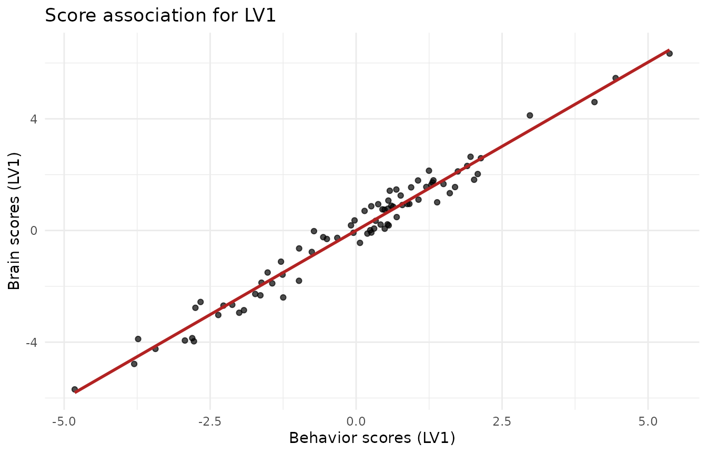
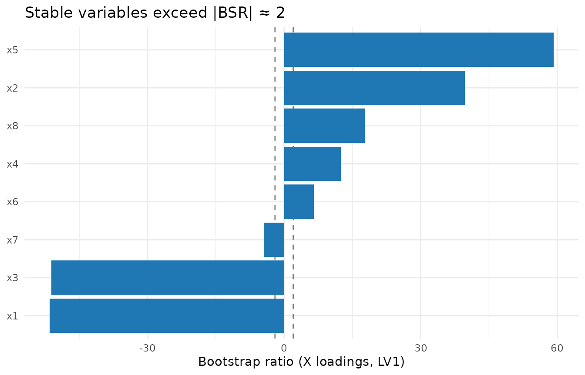
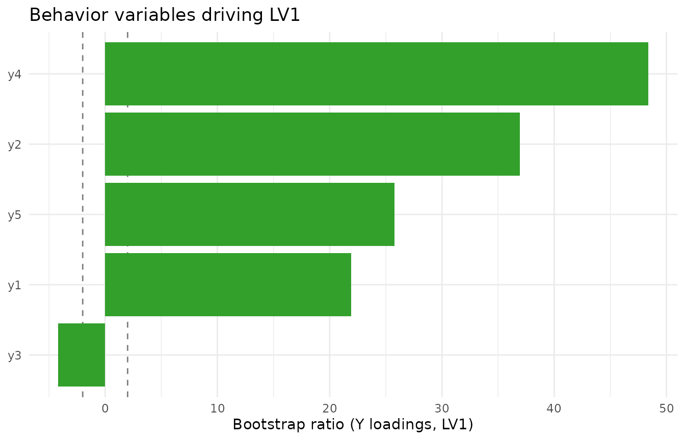

Partial Least Squares Correlation (PLSC) with Inference
PLSC.Rmd1. What this vignette covers
This walk-through shows how to:
- Fit a Behavior-style PLSC model (
plsc()),
- Inspect latent variables (LVs) and scores,
- Run a permutation test to decide how many LVs are significant,
and
- Use bootstrap ratios to identify stable loadings, with simple visualizations.
The workflow is intentionally small and fast so the vignette runs quickly; for real analyses, increase the number of permutations/bootstraps.
2. Simulate coupled X/Y blocks
n <- 80 # subjects
pX <- 8 # brain/features
pY <- 5 # behavior
d <- 2 # true latent dimensions
# orthonormal loadings
Vx_true <- qr.Q(qr(matrix(rnorm(pX * d), pX, d)))
Vy_true <- qr.Q(qr(matrix(rnorm(pY * d), pY, d)))
F_scores <- matrix(rnorm(n * d), n, d) # latent scores
noise <- 0.10
X <- F_scores %*% t(Vx_true) + noise * matrix(rnorm(n * pX), n, pX)
Y <- F_scores %*% t(Vy_true) + noise * matrix(rnorm(n * pY), n, pY)3. Fit PLSC
fit_plsc <- plsc(X, Y, ncomp = 3, # request a few extra comps
preproc_x = standardize(), # correlation-scale
preproc_y = standardize())
fit_plsc$singvals
#> [1] 4.15551071 1.76186530 0.02831984
fit_plsc$explained_cov
#> [1] 8.475956e-01 1.523650e-01 3.936602e-054. Inspect scores (brain vs behavior)
scores_df <- data.frame(
LV1_x = scores(fit_plsc, "X")[, 1],
LV1_y = scores(fit_plsc, "Y")[, 1],
LV2_x = scores(fit_plsc, "X")[, 2],
LV2_y = scores(fit_plsc, "Y")[, 2]
)
ggplot(scores_df, aes(x = LV1_y, y = LV1_x)) +
geom_point(alpha = 0.7) +
geom_smooth(method = "lm", se = FALSE, color = "firebrick") +
labs(x = "Behavior scores (LV1)", y = "Brain scores (LV1)",
title = "Score association for LV1") +
theme_minimal()
#> `geom_smooth()` using formula = 'y ~ x'
5. Permutation test: how many LVs?
Shuffle rows of Y to break the X–Y link and build an
empirical null for the singular values.
set.seed(123)
pt <- perm_test(fit_plsc, X, Y, nperm = 199, comps = 3, parallel = FALSE)
pt$component_results
#> # A tibble: 3 × 5
#> comp observed pval lower_ci upper_ci
#> <int> <dbl> <dbl> <dbl> <dbl>
#> 1 1 4.16 0.005 0.269 1.07
#> 2 2 1.76 0.005 0.0819 0.509
#> 3 3 0.0283 0.205 0.0140 0.0396
cat("Sequential n_significant (alpha = 0.05):", pt$n_significant, "\n")
#> Sequential n_significant (alpha = 0.05): 26. Bootstrap ratios for stable loadings
Bootstrap resamples subjects, re-fits PLSC, sign-aligns loadings, and
reports mean/SD (ratio ≈ Z).
Here we keep it light for the vignette; use ≥500–1000 in practice.
set.seed(321)
boot_plsc <- bootstrap(fit_plsc, nboot = 120, X = X, Y = Y, comps = 2, parallel = FALSE)
# X-loadings bootstrap ratios for LV1
df_bsr <- data.frame(
variable = paste0("x", seq_len(pX)),
bsr = boot_plsc$z_vx[, 1]
)
ggplot(df_bsr, aes(x = reorder(variable, bsr), y = bsr)) +
geom_hline(yintercept = c(-2, 2), linetype = "dashed", color = "grey50") +
geom_col(fill = "#1f78b4") +
coord_flip() +
labs(x = NULL, y = "Bootstrap ratio (X loadings, LV1)",
title = "Stable variables exceed |BSR| ≈ 2") +
theme_minimal()
Do the same for Y loadings if needed:

7. Practical tips
- Use
standardize()to run PLSC on correlation scale (default here); switch tocenter()for covariance scale.
- Increase
nperm(e.g., 999) andnboot(≥500) for publication-grade inference.
- Interpret loadings only where bootstrap ratios exceed ~|2|, and only
for LVs that pass the permutation test.
- To visualise higher-dimensional loading maps (e.g., imaging),
replace the bar plots with your spatial plotting routine applied to
boot_plsc$z_vx.